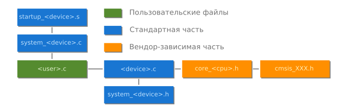

Библиотека CMSIS включает в себя следующие компоненты:
Рассмотрим только CMSIS-CORE.

Библиотека состоит из стандартной (предоставляется ARM) и вендор-зависимой (предоставляется в нашем случае ST) частей.
Заголовочный файл core_<processor_unit>.h предоставляет интерфейс к ядру. Для stm32f103c8 это core_cm3.h, так как он работает на Cortex-M3. Для Cortex-M0+ это будет файл core_cm0plus.h.
Под интерфейсом понимается удобный доступ к его регистрам. Например, в состав ядра входят еще две сущности: системный таймер и контроллер прерываний NVIC. Поэтому в этом файле содержатся вспомогательные функции для их быстрой настройки. Включить прерывание можно вызовом функции:
static __INLINE void NVIC_EnableIRQ(IRQn_Type IRQn) {
NVIC->ISER[((uint32_t)(IRQn) >> 5)] = (1 << ((uint32_t)(IRQn) & 0x1F));
/* enable interrupt */
}
Вам не нужно работать с регистрами ядра напрямую.
Другие файлы нам не столь интересны, но справедливости ради упомянем их. Например файл core_cmInstr.h содержит обертки инструкций, а core_cmFunc.h — обертки некоторых важных системных функций.
// Возвращает значение стека (PSP)
__attribute__( ( always_inline ) ) static __INLINE uint32_t __get_PSP(void) {
register uint32_t result;
__ASM volatile ("MRS %0, psp\n" : "=r" (result) );
return(result);
}
Если вы не разрабатываете приложение на самом низком уровне, то заглядывать в эти файлы незачем. Тем не менее, подробное описание работы ядра можно найти в документе ARM — Cortex-M3 Devices Generic User Guide, и мы им даже воспользуемся при настройке системного таймера.
Вторая часть библиотеки пишется непосредственным производителем микроконтроллера. Это происходит потому, что микроконтроллер — это не только его ядро, а еще и периферия. Реализация периферии не стандартизована, и каждый производитель делает ее так, как считает нужным. Адреса и даже поведение внутренних модулей (ADC, SPI, USART и т.д.) могут отличаться.
В ассемблеровском файле startup_<device>.s (в нашем случае это startup_stm32f10x_md.s) реализуется функция обработчика сброса Reset_Handler. Он задает поведение МК при запуске, т.е. выполняет некоторые задачи до входа в функцию main(), в частности, вызывает функцию SystemInit() из файла system_<device>.c (system_stm32f10x.c). Также в нем задается таблица векторов прерываний (англ. interrupt vector table) с их названиями:
g_pfnVectors:
.word _estack
.word Reset_Handler
.word NMI_Handler
.word HardFault_Handler
.word MemManage_Handler
.word BusFault_Handler
.word UsageFault_Handler
# ............................
.word SVC_Handler
.word DebugMon_Handler
.word 0
.word PendSV_Handler
.word SysTick_Handler
.word WWDG_IRQHandler
# ............................
Заголовочный файл system_<device>.h (system_stm32f10x.h) предоставляет интерфейс двум функциям и глобальной переменной и отвечает за систему тактирования.
Меняя это число, вы не меняете тактовую частоту! Переменную SystemCoreClock стоит использовать только как индикатор. Более того, никто не гарантирует, что число, записанное в этой переменной, будет отображать реальную частоту: во-первых, оно может не обновиться после изменения регистров; во-вторых, оно никак не учитывает погрешность хода генератора; и в-третьих, стандартная частота (определенная как макрос HSE_VALUE в библиотеке) внешнего кварцевого генератора — 8 МГц, но никто не мешает разработчику поставить, скажем, кварц на 12 МГц.
И последний файл, самый важный для программиста, это драйвер микроконтроллера <device>.h (stm32f10x.h). Вся карта памяти микроконтроллера (о ней еще поговорим) записана там в виде макросов. Например, адрес начала регистров периферии, флеш и оперативной памяти:
#define FLASH_BASE ((uint32_t)0x08000000)
#define SRAM_BASE ((uint32_t)0x20000000)
#define PERIPH_BASE ((uint32_t)0x40000000)
Регистры модулей, таких как порты ввода-вывода, обернуты в структуры.
typedef struct
{
__IO uint32_t CRL;
__IO uint32_t CRH;
__IO uint32_t IDR;
__IO uint32_t ODR;
__IO uint32_t BSRR;
__IO uint32_t BRR;
__IO uint32_t LCKR;
} GPIO_TypeDef;
Вместо того, чтобы обращаться к ячейке по нужному адресу, это можно сделать через структуру.
#define APB2PERIPH_BASE (PERIPH_BASE + 0x10000)
// ...
#define GPIOA_BASE (APB2PERIPH_BASE + 0x0800)
// ...
#define GPIOA ((GPIO_TypeDef *) GPIOA_BASE)
Так как элементы в структуре расположены линейно, друг за другом, а длина регистра фиксирована (uint32_t, 4 байта), то регистр CRL хранится по адресу GPIOA_BASE, а следующий за ним CRH через четыре байта, по адресу GPIOA_BASE + 4. Ниже приведен пример настройки одной из ножек порта на выход. Вам этот код пока что ничего не скажет, но суть сейчас в другом — вам нужно увидеть пример использования библиотеки.
RCC->APB2ENR |= RCC_APB2ENR_IOPAEN; // Включение тактирования порта A
GPIOA->CRL &= ~GPIO_CRL_MODE3_0; // set as
GPIOA->CRL |= GPIO_CRL_MODE3_1; // output with 2 MHz speed
GPIOA->CRL &= ~GPIO_CRL_CNF3; // push-pull output
В самом конце файла есть полезные макросы для записи, сброса, чтения битов и целых регистров.
#define SET_BIT(REG, BIT) ((REG) |= (BIT))
#define CLEAR_BIT(REG, BIT) ((REG) &= ~(BIT))
#define READ_BIT(REG, BIT) ((REG) & (BIT))
#define CLEAR_REG(REG) ((REG) = (0x0))
#define WRITE_REG(REG, VAL) ((REG) = (VAL))
#define READ_REG(REG) ((REG))
#define MODIFY_REG(REG, CLEARMASK, SETMASK) WRITE_REG((REG), (((READ_REG(REG)) & (~(CLEARMASK))) | (SETMASK)))
Мы рассмотрели, как эти операции работают, в разделе «Микроконтроллер под микроскопом». Т.е. код выше можно переписать так (и он будет более читаем):
SET_BIT(RCC->APB2ENR, RCC_APB2ENR_IOPAEN);
CLEAR_BIT(GPIOA->CRL, GPIO_CRL_MODE3_1);
// ...
Для всех стандартных типов (определенных в <stdint.h>) вводятся сокращенные синонимы, например:
typedef uint32_t u32;
typedef uint16_t u16;
typedef uint8_t u8;
typedef const uint32_t uc32;
typedef const uint16_t uc16;
typedef const uint8_t uc8;
typedef __IO uint32_t vu32;
typedef __IO uint16_t vu16;
typedef __IO uint8_t vu8;
Слово __IO не входит в стандарт языка, а переопределено в core_cm3.h:
#define __IO volatile
Последнее, о чём нужно упомянуть, это перечисление IRQn_Type.
typedef enum IRQn
{ // Cortex-M3 Processor Exceptions Numbers
NonMaskableInt_IRQn = -14,
MemoryManagement_IRQn = -12,
BusFault_IRQn = -11,
UsageFault_IRQn = -10,
SVCall_IRQn = -5,
DebugMonitor_IRQn = -4,
PendSV_IRQn = -2,
SysTick_IRQn = -1,
// ....
#ifdef STM32F10X_MD
ADC1_2_IRQn = 18,
USB_HP_CAN1_TX_IRQn = 19,
USB_LP_CAN1_RX0_IRQn = 20,
CAN1_RX1_IRQn = 21,
CAN1_SCE_IRQn = 22,
EXTI9_5_IRQn = 23,
TIM1_BRK_IRQn = 24,
TIM1_UP_IRQn = 25,
// ...
#endif /* STM32F10X_MD */
} IRQn_Type;
Оно устанавливает номер исключительной ситуации в соответствие с его названием. Когда вы вызываете функции NVIC_Enable() или NVIC_Disable(), в качестве параметра нужно использовать одно из имен в этом перечислении.